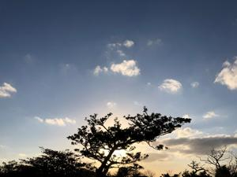
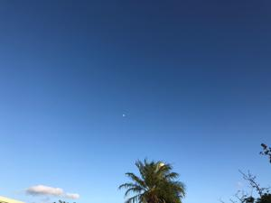
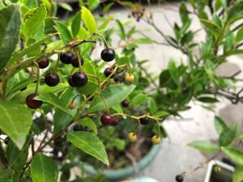

うるがいの話 ある日
最新: リバテープ【うるがいの話 ある日】とは 一日だけのプログです
『うるがいの話』の最新一日だけのプログで、通信料が少なく経済的だ。カニの画像をクリックすると全ての日付が載る『うるがいの話』サイトを表示します
|
|
【うるがいの話】 うるがい(ｳﾙｶﾞｲ urugai)とは、『もずくがに』の名前でとても大きくなります。 |
|---|---|
|
|
【カミマヤーの話】 猫のことを方言でマヤーといいます。カミマヤーとは、神の猫のことです。 |
|
【タナガーの話】 たながー（ﾀﾅｶﾞｰtanagaa）とは手長えびのことで、何種類かあり大きいのは車 エビぐらいになります。 |

|
【ぶながぁの話】 ぶながー(bunagaa)とは、赤い髪の毛、赤い身体、そして身長は１ｍ２０ｃｍ ぐらい、川の蟹を食べているの目撃された。場所は沖縄県国頭郡大宜味村のと ある村僕の隣近所に住んでいる爺さんから、聞いた話です。 |
|
|
【ギーマの話】 ギーマ(giima)とは、山原の里山に咲くスズランに似た、 花を付けます。実は食べられます、 気が付くと口の周りが紫になっています。 |
2021年12月15日 (水）リバテープ
15:59
  
夜、隣近所からの電話をヨメがとる。旦那さんが、障子で手を切ったのでリバ
テープを借りたいとのこと。ヨメは急いでリバテープを上げる、その時、一個
のミカンを貰う。そして１０分後、また電話があって親戚からもらったバナナ
（畑で採られたひと房）を貰う。ふむふむ、わらしべ長者の物語を思い出す。
ところで、夜中に怪我をするとは大変である。ヨメが水洗いで手が荒れてリバ
テープを頻繁に使うので、在庫がかなりある。私は、素手で水洗いはしないの
で大丈夫である（かならず手袋をするので）。
１５時５４分 ビットコインの総資産 ￥１５，８９３